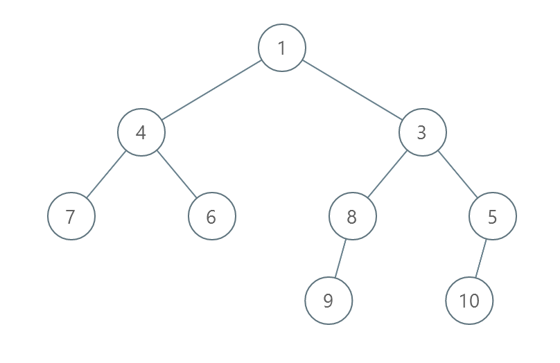
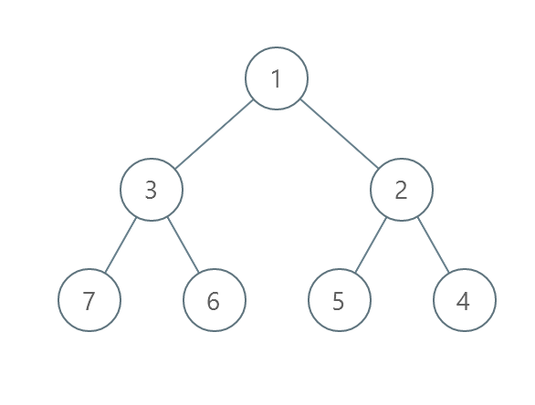
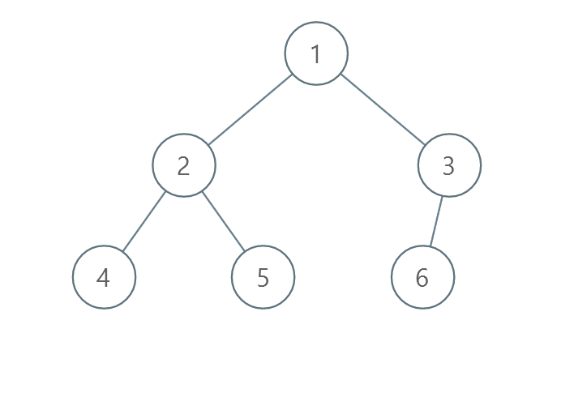

| Category | Difficulty | Likes | Dislikes |
|---|---|---|---|
| Algorithms | Medium | 1232 | 44 |
amazon | google
You are given the root of a binary tree with unique values.
In one operation, you can choose any two nodes at the same level and swap their values.
Return the minimum number of operations needed to make the values at each level sorted in a strictly increasing order.
The level of a node is the number of edges along the path between it and the root node.
Example 1:

Input: root = [1,4,3,7,6,8,5,null,null,null,null,9,null,10]
Output: 3
Explanation:
- Swap 4 and 3. The 2nd level becomes [3,4].
- Swap 7 and 5. The 3rd level becomes [5,6,8,7].
- Swap 8 and 7. The 3rd level becomes [5,6,7,8].
We used 3 operations so return 3.
It can be proven that 3 is the minimum number of operations needed.Example 2:

Input: root = [1,3,2,7,6,5,4]
Output: 3
Explanation:
- Swap 3 and 2. The 2nd level becomes [2,3].
- Swap 7 and 4. The 3rd level becomes [4,6,5,7].
- Swap 6 and 5. The 3rd level becomes [4,5,6,7].
We used 3 operations so return 3.
It can be proven that 3 is the minimum number of operations needed.Example 3:

Input: root = [1,2,3,4,5,6]
Output: 0
Explanation: Each level is already sorted in increasing order so return 0.
Constraints:
[1, 105].1 <= Node.val <= 105